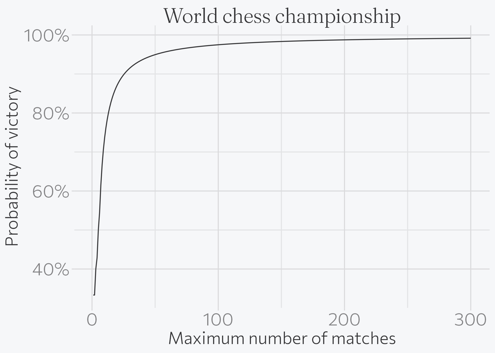
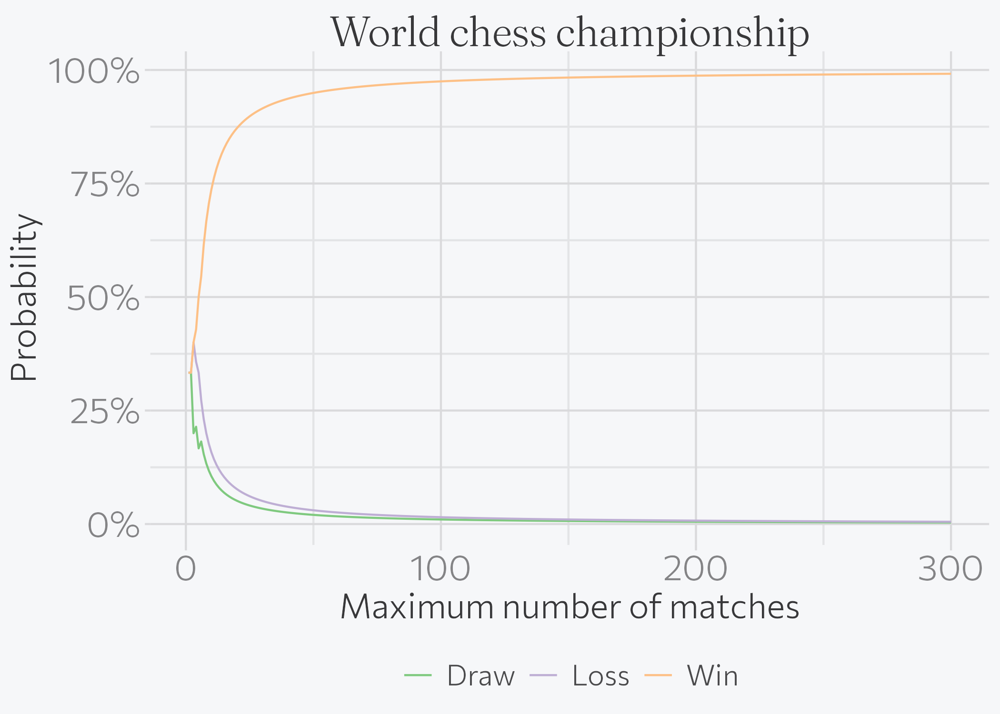

library(tidyverse)
library(magrittr)
Attaching package: 'magrittr'The following object is masked from 'package:purrr':
set_namesThe following object is masked from 'package:tidyr':
extracttheme_set(brand_theme(18))Benjamin Soltoff
November 16, 2018
This week’s Riddler Express from FiveThirtyEight:
The World Chess Championship is underway. It is a 12-game match between the world’s top two grandmasters. Many chess fans feel that 12 games is far too short for a biennial world championship match, allowing too much variance. Say one of the players is better than his opponent to the degree that he wins 20 percent of all games, loses 15 percent of games and that 65 percent of games are drawn. Wins at this match are worth 1 point, draws a half-point for each player, and losses 0 points. In a 12-game match, the first player to 6.5 points wins. What are the chances the better player wins a 12-game match? How many games would a match have to be in order to give the better player a 75 chance of winning the match outright? A 90 percent chance? A 99 percent chance?
I’m currently teaching a math/stats course and we’ve recently covered a ton of different probability distributions. This problem can be defined by the multinomial distribution, which is a generalizable form of the binomial distribution. In the original setup of the problem, \(n=12\), \(k=3\), and probabilities \(p_0 = 0.2, p_1 = 0.15, p_2 = 0.6\) for the better player winning, losing, and drawing respectively.
Based on the example here, I wrote a generalizable function to estimate the probability of win, lose, and draw for all possible outcomes for any number of \(n\) matches and probabilities \(p\), and applied it to matches with length between 1 and 300 using the probabilities identified in the problem.
Attaching package: 'magrittr'The following object is masked from 'package:purrr':
set_namesThe following object is masked from 'package:tidyr':
extractchess_outcomes <- function(n_matches, prob) {
# define all possibilities
X <- expand.grid(n = 0:n_matches, k = 0:3) %>%
as.matrix %>%
t
X <- X[, colSums(X) <= n_matches]
X <- rbind(X, n_matches:n_matches - colSums(X))
dimnames(X) <- list(c("win", "lose", "draw"), NULL)
# calculate probabilities of each outcome
X_prob <- array_branch(X, margin = 2) %>%
map_dbl(dmultinom, prob = prob)
# combine together
outcomes <- X %>%
t %>%
as_tibble %>%
mutate(points = win * 1 + lose * 0 + draw * .5, prob = X_prob)
return(outcomes)
}# iterate over a varying number of matches
varying_matches <- tibble(n_matches = 1:300) %>%
mutate(
outcomes = map(n_matches, chess_outcomes, prob = c(0.2, 0.15, 0.65)),
prob_win = map2_dbl(outcomes, n_matches, ~ mean(.x$points > (.y / 2))),
prob_draw = map2_dbl(outcomes, n_matches, ~ mean(.x$points == (.y / 2))),
prob_loss = map2_dbl(outcomes, n_matches, ~ mean(.x$points < (.y / 2)))
)
varying_matches %>%
gather(outcome, prob, starts_with("prob")) %>%
mutate(
outcome = str_remove(outcome, "prob_"),
outcome = str_to_title(outcome)
) %>%
ggplot(aes(n_matches, prob, color = outcome)) +
geom_line() +
scale_y_continuous(labels = scales::percent) +
scale_color_brewer(type = "qual") +
labs(
title = "World chess championship",
x = "Maximum number of matches",
y = "Probability",
color = NULL
) +
theme(legend.position = "bottom")
For a standard 12 game match, the probability the better player wins is 0.7826. To achieve a 75% or better probability of success, the match length should be 11. For a 90% chance, it should be a best of 26 games match. For 99%, make that best of 251.
─ Session info ───────────────────────────────────────────────────────────────
setting value
version R version 4.6.1 (2026-06-24)
os macOS Tahoe 26.6.1
system aarch64, darwin23
ui X11
language (EN)
collate en_US.UTF-8
ctype en_US.UTF-8
tz America/New_York
date 2026-08-12
pandoc 3.4 @ /usr/local/bin/ (via rmarkdown)
quarto 1.10.18 @ /usr/local/bin/quarto
─ Packages ───────────────────────────────────────────────────────────────────
! package * version date (UTC) lib source
P brand.yml 0.1.0 2025-11-06 [?] RSPM
P cli 3.6.6 2026-04-09 [?] RSPM
P codetools 0.2-20 2024-03-31 [?] CRAN (R 4.6.1)
P digest 0.6.39 2025-11-19 [?] RSPM
P dplyr * 1.2.1 2026-04-03 [?] RSPM
P evaluate 1.0.5 2025-08-27 [?] RSPM
P farver 2.1.2 2024-05-13 [?] RSPM
P fastmap 1.2.0 2024-05-15 [?] RSPM
P forcats * 1.0.1 2025-09-25 [?] RSPM
P generics 0.1.4 2025-05-09 [?] RSPM
P ggplot2 * 4.0.3 2026-04-22 [?] RSPM
P glue 1.8.1 2026-04-17 [?] RSPM
P gtable 0.3.6 2024-10-25 [?] RSPM
P hms 1.1.4 2025-10-17 [?] RSPM
P htmltools 0.5.9 2025-12-04 [?] RSPM
P jsonlite 2.0.0 2025-03-27 [?] RSPM
P knitr 1.51 2025-12-20 [?] RSPM
P labeling 0.4.3 2023-08-29 [?] RSPM
P lifecycle 1.0.5 2026-01-08 [?] RSPM
P lubridate * 1.9.5 2026-02-04 [?] RSPM
P magrittr * 2.0.5 2026-04-04 [?] RSPM
P otel 0.2.0 2025-08-29 [?] RSPM
P pillar 1.11.1 2025-09-17 [?] RSPM
P pkgconfig 2.0.3 2019-09-22 [?] RSPM
P prismatic 1.1.2 2024-04-10 [?] RSPM
P purrr * 1.2.2 2026-04-10 [?] RSPM
P R6 2.6.1 2025-02-15 [?] RSPM
P ragg 1.5.2 2026-03-23 [?] RSPM
P RColorBrewer 1.1-3 2022-04-03 [?] RSPM
P readr * 2.2.0 2026-02-19 [?] RSPM
renv 1.2.4 2026-08-03 [1] RSPM (R 4.6.0)
P rlang 1.3.0 2026-07-05 [?] RSPM
P rmarkdown 2.31 2026-03-26 [?] RSPM
P S7 0.2.2 2026-04-22 [?] RSPM
P scales 1.4.0 2025-04-24 [?] RSPM
P sessioninfo 1.2.4 2026-06-04 [?] RSPM
P stringi 1.8.9 2026-08-04 [?] RSPM
P stringr * 1.6.0 2025-11-04 [?] RSPM
P systemfonts 1.3.2 2026-03-05 [?] RSPM
P textshaping 1.0.5 2026-03-06 [?] RSPM
P tibble * 3.3.1 2026-01-11 [?] RSPM
P tidyr * 1.3.2 2025-12-19 [?] RSPM
P tidyselect 1.2.1 2024-03-11 [?] RSPM
P tidyverse * 2.0.0 2023-02-22 [?] RSPM
P timechange 0.4.0 2026-01-29 [?] RSPM
P tzdb 0.5.0 2025-03-15 [?] RSPM
P vctrs 0.7.3 2026-04-11 [?] RSPM
P withr 3.0.3 2026-06-19 [?] RSPM
P xfun 0.60 2026-07-09 [?] RSPM
P yaml 2.3.12 2025-12-10 [?] RSPM
[1] /Users/bcs88/Projects/personal-site/renv/library/macos/R-4.6/aarch64-apple-darwin23
[2] /Users/bcs88/Library/Caches/org.R-project.R/R/renv/sandbox/macos/R-4.6/aarch64-apple-darwin23/46003b10
* ── Packages attached to the search path.
P ── Loaded and on-disk path mismatch.
──────────────────────────────────────────────────────────────────────────────